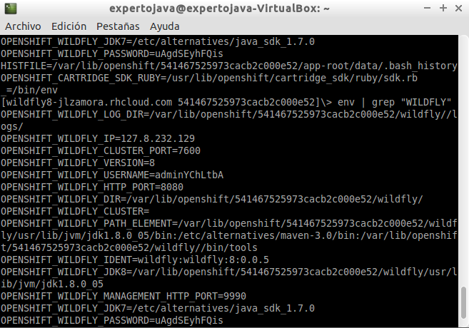
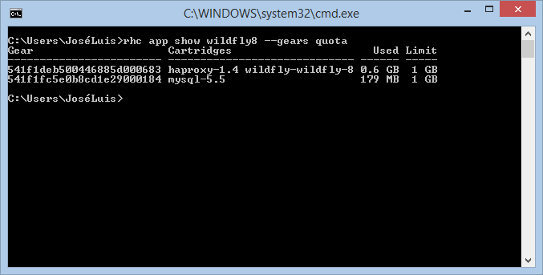

Servidores Web y PaaS
Sesión 7: Características IaaS+ de OpenShift
Índice
- Acceso SSH
- Configuración específica OpenShift
- Variables de entorno
- Markers
- Action Hook Scripts
- Transferencia de ficheros
- Tareas planificadas
- Almacenamiento y copias de seguridad
- Procedimientos
»Acceso SSH
- Permite el acceso a los gears y trabajar como si fuera una máquina "propia".
- Acceso mediante un cliente ssh estándar:
- rhc simplifica el acceso:

rhc ssh [app]
Acceso SSH

Acceso SSH
- Además existirá una carpeta por cada cartridge instalado con su configuración.
- Desde la sesión SSH podremos:
- Modificar ficheros de configuración.
- Reiniciar la aplicación o uno de sus cartridges.
- Cargar datos en la BD.
- Crear y ejecutar scripts.
- ...
Acceso SSH
- Comandos Unix más comandos propios
- help: muestra un cuadro resumen con los comandos básicos de OpenShift.
- gear: permite controlar la aplicación (iniciarla, pararla, reiniciarla, etc.)
- tail_all: similar al tail de Unix pero vuelca todos los logs de los servicios.
- quota: muestra el espacio utilizado y los límites definidos para el gear.
- mysql: lanza el cliente de MySQL si tenemos desplegado el cartridge.
- psql: cliente de PostgreSQL.
- mongo: cliente de MongoDB.
Acceso SSH
Si la configuración está en el repositorio Git, cualquier cambio que apliquemos directamente sobre el gear se acabará perdiendo.
»Variables de entorno
Variables de entorno:
- Configuración de una aplicación:
- Configuración dependiente de la instancia concreta: usuario de acceso a base de datos, puertos, credenciales.
- Configuración independiente de la instancia: Recursos desplegados, configuración de seguridad, políticas de backups.
- OpenShift utiliza las variables de entorno para desacoplar la configuración independiente del entorno de la dependiente. → Escalabilidad y mantenimiento simplificado.
Variables de entorno:
- Predefinidas
- Propias de OpenShift (generales)
- Específicas de un cartridge
- Definidas por el usuario.
Comando env

Variables más importantes:
- OPENSHIFT_APP_NAME Nombre de la aplicación.
- OPENSHIFT_APP_DNS Nombre DNS completo (aplicación y dominio)
- OPENSHIFT_DATA_DIR Ruta de datos de la aplicación.
- OPENSHIFT_LOG_DIR Ruta de logs.
- OPENSHIFT_REPO_DIR Ruta del repositorio Git
- OPENSHIFT_TMP_DIR Directorio temporal de trabajo (/tmp).
Crear/modificar variables
// Establecer variables de entorno
$ rhc env set VARIABLE1=valor1 ... VARIABLEN=valorn -a [app]
// Muestra todas las variables de entorno definidas por el usuario
$ rhc env list -a [app]
// Eliminar variables de usuario
$ rhc env unset VARIABLE1=valor1 ... VARIABLEN=valorn -a [app]
// Mostrar el valor de las variables especificadas.
$ rhc env show VARIABLE1... VARIABLEN -a [app]
Las variables predefinidas son casi todas de sólo lectura.
»Markers
- Son ficheros "cebo" cuya presencia modifica aspectos de la configuración de un cartridge.
- Similares a los que utiliza WildFly para gestionar los despliegues
- Ejemplo, activación de Hot Deploy:
$ touch .openshift/markers/hot_deploy $ git add .openshift/markers/hot_deploy $ git commit -m "Changing application to hot deploy" $ git push origin
Otros markers destacados
- disable_auto_scaling
Desactiva autoescalado de gears en función de la carga. - force_clean_build
Fuerza a eliminar todos los artefactos previamente construidos - skip_maven_build
Desactiva la compilación Maven al hacer un push al repositorio - enable_jpda
Activa la depuración remota del servidor de aplicaciones - java7/java8
Fuerza a utilizar el JRE de Java 7/8 (por defecto Java 6)
»Action Hook Scripts
- Son scripts que se ejecutan ante determinados eventos.
- Cada cartridge puede disparar diferentes eventos. Los estándar son:
- pre_build, build, deploy, post_deploy (en tiempo de compilación)
- pre_start, post_start, pre_stop, post_stop, pre_reload, post_reload, pre_restart, post_restart, pre_tidy, post_tidy (en tiempo de ejecución)
- El nombre del fichero debe coincidir con el evento y ubicarse en .openshift/action_hooks.
- Puede estar implementado en cualquier lenguaje de script que admita OpenShift (shellscript, Python, PHP, Ruby...)
- Deben tener permisos de ejecución !!
- Especificar un cartridge concreto para un script de control (en tiempo de ejecución)
pre_start_{cartridge} - Ejemplo script openshift/action_hooks/build
#!/bin/bash curl -o $OPENSHIFT_DATA_DIR/cartel.png http://web.ua.es/es/expertojava/imagenes/cartel300.png - Subida al repositorio:
$ git add .openshift $ git commit -m "Adding a build hook" $ git push - Durante el "push" se muestra la salida estándar de cualquier script que se ejecute.
»Transferencia de ficheros
- Comando scp (secure copy de Unix):
$ scp [origen] [destino] $ scp miscript.sql 541f1deb500446885d000683@wildfly8-djbyte.rhcloud.com:~/app-root/data- El usuario y la máquina se pueden obtener con el comando:
$ rhc app show [app] SSH: 541f1deb500446885d000683@wildfly8-djbyte.rhcloud.com
- El usuario y la máquina se pueden obtener con el comando:
- Comando rhc scp:
rhc scp [app] [accion] [origen] [destino] rhc scp paas upload miscript.sql app-root/data
Comando rsync
- Transmite únicamente las diferencias entre los ficheros/carpetas de origen y destino.
$ rsync [origen] [destino]
$ rsync -avz -e ssh 542ab14750044656c70000a0@wildfly8-jlzamora.rhcloud.com:~/app-root/data/prueba.png .
$ # a: archive v: verbose z: compress
»Tareas planificadas
- Cartridge cron permite ejecutar tareas planificadas.
- Funcionamiento similar a los action hook scripts
- Estructura de carpetas en .openshift/cron/ según periodicidad:
daily hourly minutely monthly weekly - Los scripts pueden tener cualquier nombre y lenguaje pero deben tener permisos de ejecución.
Mayor precisión en la planificación:
#!/bin/bash
minute=$(date '+%M')
if [ $minute != 12 ]; then
exit
fi
# rest of the script
»Almacenamiento en disco
- Carpetas con permisos de L/E:
- OPENSHIFT_HOME_DIR: Carpeta raíz del gear
- OPENSHIFT_TMP_DIR: Carpeta para datos temporales
- OPENSHIFT_DATA_DIR ($OPENSHIFT_HOMEDIR/app-root/data)
- Única carpeta de almacenamiento de datos permantente.
- Espacio propio de cada gear, no compartido en aplicaciones escalables.
Cuota de almacenamiento
Carpetas:
- La carpeta de datos (OPENSHIFT_DATA_DIR)
- La carpeta temporal (OPENSHIFT_TMP_DIR)
- El repositorio Git y repositorio de versiones
- Las carpetas de logs
- Los ficheros de datos de las BBDD
Cuota inicial de todos los gears 1Gb ampliable hasta 30Gb.
Cuota de almacenamiento
Consulta del espacio utilizado y disponible para todos los gear:
rhc app show [app] --gears quota

Cuota de almacenamiento
- OpenShift mostrará avisos si se supera el 90% de uso
- Si se llega al 100%:
remote: error: unable to create temporary file: Disk quota exceeded - Soluciones:
- Comando rhc tidy
- Ampliar espacio (solo en modalidad de pago):
$ rhc cartridge storage [cartridge] -a [app] --set capacidad(GB) $ rhc cartridge storage php-5 -a racer --set 5gb
»Copias de seguridad
- Aunque trabajemos en una plataforma cloud es conveniente utilizar algún tipo de backup .
- Recursos:
- Procedimiento manual, factible con lo que ya sabemos de OpenShift
- Deployment Historiy
- Application snapshots
Deployment History:
Especificar la profundidad del histórico:
$ rhc app-configure --keep-deployments [num]
Almacenamiento en la carpeta app-deployments por timestamp e id. Repositorio y dependencias.
[wildfly8-jlzamora.rhcloud.com app-deployments]\> ls
2014-10-03_11-32-48.438 2014-10-03_11-51-38.310 by-id current
[wildfly8-jlzamora.rhcloud.com app-deployments]\> ls by-id
88410fa9 b901caed
[wildfly8-jlzamora.rhcloud.com app-deployments]\>
# rhc deployment activate [id despliegue] -app [app]
$ rhc deployment activate b901caed -app wildfly8
Activating deployment 'b901caed' on application wildfly8 ...
Application Snapshots
- Se genera un backup completo de los datos del gear (informacion catalogada como exportable).
- Tanto el backup como el restore son procedimientos lentos e implican una parada.
- El backup se genera en la máquina cliente, no en el gear.
Backup
& rhc snapshot-save [app]
Pulling down a snapshot of application 'wildfly8' to wildfly8.tar.gz ... done
Restore
& rhc snapshot-restore [app]
»Procedimientos
Depuración de aplicaciones en remoto
- Añadir el marker enable_jpda.
- Activar el port-forwarding.
- Abrir el proyecto en IntelliJ y crear una nueva configuración de depuración (transporte socket).

Volcado de threads
$ rhc threaddump -a [app]
Para WildFly8 el volcado está en server.log
Despliegue manual de aplicaciones (I)
Configuración de despliegue:
$ rhc app-configure
wildfly8 @ http://wildfly8-jlzamora.rhcloud.com/ (uuid: 542ab14750044656c70000a0)
---------------------------------------------------------------------------------
Deployment: auto (on git push)
Keep Deployments: 1
Deployment Type: git
Deployment Branch: master
--[no-]auto-deploy Activar/desactivar autodeploy.
--keep-deployments Profundidad del histórico.
--deployment-branch Rama de compilación/despliegue.
--deployment-type (git|binary) binario o a partir de compilación.
Despliegue manual de aplicaciones (II)
Desactivando auto-deploy podemos controlar el despliegue con el comando:
rhc app-deploy [ref] --app [app]
ref: etiqueta, rama o commit de Git
Parámetros que se superponen a la configuración de markers:
- --[no-]hot-deploy Desplegar (o no ) sin reiniciar el servidor.
- --[no-]force-clean-build Recompila todo el proyecto (o no) antes de desplegar.
Compilar proyectos con dependencias precompiladas
- Añadir el jar/war a la raíz del repositorio Git.
- Crear un script pre_build que ejecute un maven install
#Ejemplo para ficheros jar mvn install:install-file -Dfile=$OPENSHIFT_REPO_DIR/fichero.jar -DgroupId=[grupo] \ -DartifactId=[artefacto] -Dversion=[versión] -Dpackaging=jar - Referenciar a la dependencia en el pom del proyecto con scope compile.
Desplegar una aplicación precompilada
- Crear una nueva aplicación con los cartridges necesarios.
- Eliminar el código fuente previo:
- Copiar el binario a la carpeta deployments del repositorio y darle el nombre ROOT.war.
- Hacer commit y push
- Limpiar logs anteriores y el repositorio Git mediante:
& rhc [app] tidy
& git rm -r src/ pom.xml